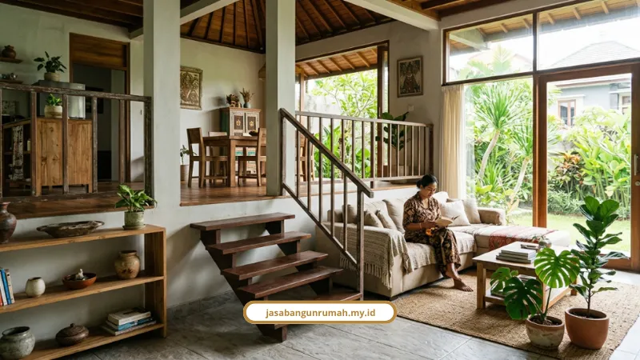

Daftar Isi
Tanah miring bukan kutukan, justru bisa jadi keuntungan kalau tahu caranya. Desain rumah split level adalah jawabannya, membangun rumah berjenjang mengikuti kontur asli tanah tanpa harus meratakan lereng secara ekstrem.
Konsep ini paling relevan buat Anda yang punya lahan di kawasan Semarang Atas seperti Candi, Tembalang, Manyaran, atau Gunungpati.
Baca Juga: Jasa Bangun Rumah Semarang, RAB Transparan
Kenapa Tanah di Semarang Atas Susah Dibangun Rumah Biasa?
Topografi Semarang Atas memang beda dari Semarang Bawah yang cenderung rata. Area perbukitan di sini punya kontur miring yang perlu penanganan struktur khusus.
- Butuh pondasi bertingkat, bukan pondasi rata biasa.
- Butuh dinding penahan tanah (retaining wall) supaya lereng nggak longsor.
- Wajib tes tanah (soil test) dulu, biayanya sekitar Rp5.000.000-Rp15.000.000, buat tahu kedalaman tanah keras dan daya dukung lahan.
Boby Rahmawan, penulis spesialis konstruksi, menyebut kesalahan paling fatal saat bangun di tanah berkontur Semarang Atas adalah nggak melakukan tes tanah dulu. Salah hitung jenis pondasi bisa memicu pembengkakan anggaran hingga puluhan juta rupiah di tengah proyek.
Soal perizinan juga nggak bisa disepelekan. Setiap pembangunan wajib punya PBG dan mematuhi Perwal Semarang No. 24 Tahun 2011 soal Garis Sempadan Jalan dan Garis Sempadan Bangunan, yang tertuang dalam dokumen Keterangan Rencana Kota dari Dinas Tata Kota Semarang.
Apa Sebenarnya Konsep Desain Rumah Split Level?
Split level itu sederhananya membangun rumah berjenjang, bukan rata seperti rumah biasa. Batas antar ruang dibentuk oleh beda ketinggian lantai, bukan tembok tebal.
Beberapa keunggulannya:
- Interior terasa lebih luas dan lega karena nggak ada dinding masif yang memenjara ruang.
- Sirkulasi udara dan pencahayaan lebih optimal karena ruang saling terbuka antar level.
- Bisa dimaksimalkan dengan area mezzanine di antara dua lantai utama untuk ruang kerja atau santai.
- Tangga penghubung antar level dibuat landai (biasanya sekitar 6 anak tangga) supaya nggak bikin cepat lelah naik turun.
Pembagian ruangnya biasanya begini: garasi dan servis di undakan paling bawah, ruang tamu-keluarga-makan di level tengah, kamar tidur utama di level atas untuk privasi lebih.
I Gde Eka Pramana, arsitek dari Manasara Architect, menjelaskan bahwa tanah miring justru punya kelebihan arsitektural tinggi kalau dieksplorasi lewat split level. Batas antar ruang berupa beda elevasi, bukan tembok masif, dan susunan lantainya fleksibel untuk lahan terbatas.

Bagaimana Cara Mengamankan Lereng Supaya Nggak Longsor?
Keamanan struktur adalah hal pertama yang harus dipastikan sebelum bicara estetika desain. Beberapa solusi teknisnya:
- Pondasi khusus seperti kombinasi pondasi bertingkat, footplate, bore pile, atau strouss pile.
- Perkuatan lereng lewat retaining wall, soil nailing, ground anchor, atau bronjong.
- Sistem drainase terintegrasi supaya air hujan nggak menumpuk dan memicu tekanan air pori berlebih di dalam tanah.
- Hindari beban berat di tepi lereng kritis, seperti kolam renang atau tangki air besar, dan manfaatkan tanaman berakar kuat sebagai penahan erosi.
Salah satu klien kami, Dipa Yustia, seorang pengacara yang membangun rumah di Manyaran, Kecamatan Ngaliyan, punya lahan miring terjal 205 m². Awalnya beliau mau meratakan tanah, tapi biayanya kelewat mahal.
Atas saran arsitek, beliau akhirnya pakai konsep rumah tumbuh 2 lantai bergaya split level (dari luar terlihat seperti 3 lantai). Area bawah jadi basement dan garasi, undakan tengah untuk ruang keluarga, undakan atas untuk kamar tidur, dihubungkan 6 anak tangga landai.
Berapa Estimasi Biaya Bangun Rumah Split Level di Semarang?
Biaya dasarnya sama dengan konstruksi rumah biasa, tapi ada tambahan khusus untuk pekerjaan lahan miring.
- Spesifikasi standar: Rp3.000.000-Rp4.500.000/m².
- Spesifikasi menengah: Rp4.500.000-Rp6.500.000/m².
- Spesifikasi premium: Rp7.000.000-Rp10.000.000+/m².
- Biaya tambahan untuk galian, pondasi bertingkat, dan retaining wall di lahan miring: sekitar 15-25 persen lebih mahal dibanding lahan datar.
Jangan lupa siapkan dana cadangan 10-15 persen dari total RAB untuk antisipasi perubahan kondisi tanah di lapangan.
Kalau Anda ingin gambaran lengkap simulasi anggaran per tipe rumah di Semarang, saya sudah bahas rinci soal itu di artikel jasa bangun rumah Semarang yang mencakup RAB transparan dan proses konsultasi gratisnya.
Apakah Split Level Cocok untuk Semua Jenis Lahan Miring?
Cocok untuk sebagian besar lahan miring, tapi tetap harus lewat tes tanah dulu sebelum desain digambar. Kemiringan ekstrem atau tanah labil butuh perhitungan struktur lebih detail dibanding lahan miring landai.
Setiap lahan punya karakteristik geoteknik berbeda, jadi jangan asal tiru desain rumah tetangga tanpa cek kondisi tanah sendiri.
Tanah miring di Semarang Atas sebenarnya bukan penghalang buat punya rumah nyaman, justru bisa jadi nilai lebih kalau desainnya tepat. Split level menawarkan ruang yang lebih lega tanpa harus mengorbankan keamanan struktur lereng.
Kalau Anda serius mau eksekusi desain ini, kami bisa bantu dari tahap tes tanah, desain arsitektur, sampai konstruksi dengan RAB yang jelas dari awal. Hubungi kami via WhatsApp/Telp 0889-8964-3555.